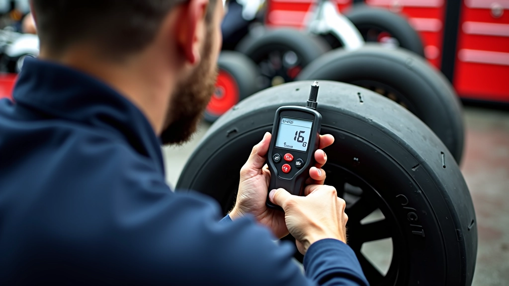
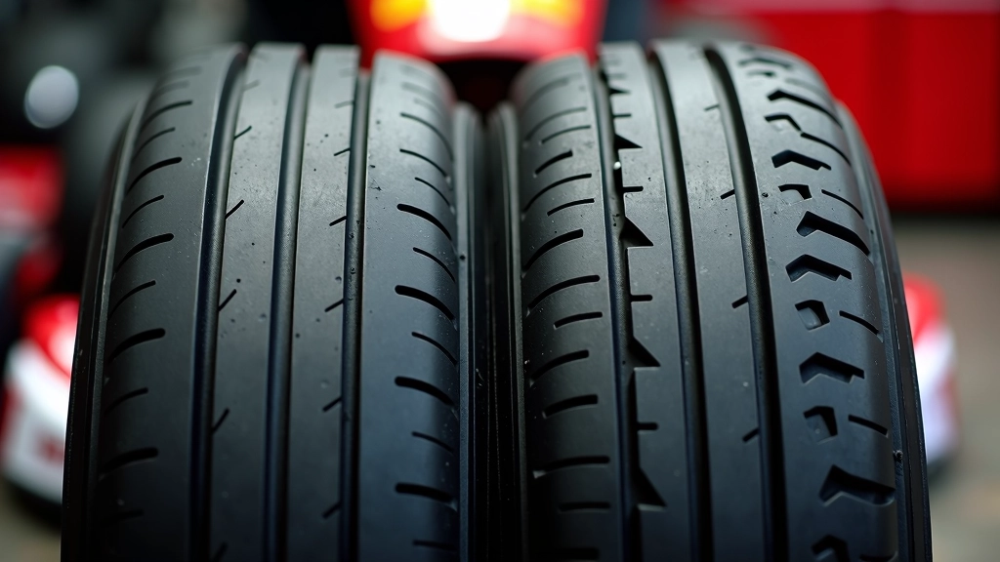
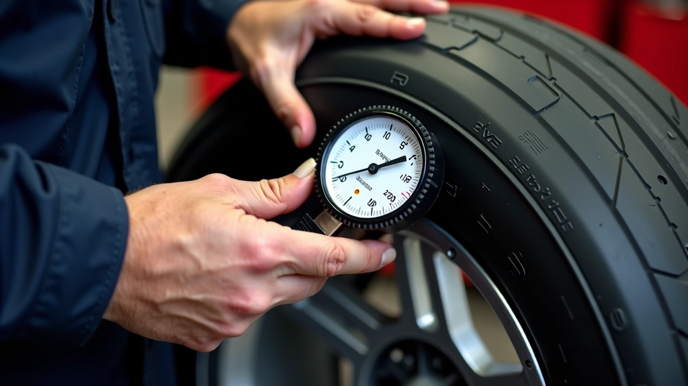

اختيار الإطار المناسب حسب ظروف الحلبة
دليل عملي لاختيار الإطارات المناسبة لأنواع مختلفة من أسطح الحلبة والظروف المناخية.

استراتيجيات متقدمة لموازنة إطاراتك وتحسين استجابة السيارة. اكتشف كيف يؤثر التوازن على قدرتك على الانعطاف والتسارع بفعالية أكبر.

فريق التحرير والمراجعة
كتبه فريق جريب تراك التحريري، المتخصص في تقديم إرشادات عملية وموثوقة حول إدارة الإطارات والتماسك في الكارتينج.
التوازن بين الإطارات الأمامية والخلفية ليس مجرد رقم على لوحة. إنه المفتاح الحقيقي لكيفية تفاعل سيارتك مع الحلبة. عندما تكون الإطارات متوازنة بشكل صحيح، تحصل على استجابة متسقة، وتقلل من الانجراف، وتزيد من سرعتك الإجمالية.
الأمر يتعلق بتوزيع القوى. الإطارات الأمامية تتحكم في الاتجاه. الإطارات الخلفية توفر الدفع والثبات. عندما تكون متوازنة، تعمل معاً كفريق واحد. إذا كانت إحداها مختلفة — أضعف أو أقوى — فستشعر بعدم الاستقرار في كل منعطف.
نعم، حتى تعديل صغير يمكن أن يحدث فرقاً. إذا كنت تعمل على تحسين أوقاتك، فأنت بحاجة إلى فهم هذه الديناميكيات. معظم السائقين لا ينتبهون لهذا. لكن الذين يفعلون — هم من يفوزون.
قبل أن تتمكن من تحسين شيء ما، عليك أن تعرف أين أنت الآن. هناك عدة طرق للقيام بذلك، وبعضها أكثر دقة من الآخر.
الطريقة الأولى: اختبار الحساسية. قيادة بسيطة حول الحلبة والشعور بكيفية تفاعل السيارة. هل تشعر أن الأمام "خفيف"؟ هل الخلف ثقيل جداً؟ هذا الشعور يخبرك بالكثير. لكن هذا يتطلب خبرة — أنت بحاجة إلى معرفة ما يجب أن تشعر به بالفعل.
الآن للجزء العملي. كيف تحقق التوازن الفعلي؟ يبدأ الأمر بفهم كيفية عمل الضغط والحمل والاحتكاك معاً. ليس عليك أن تكون مهندساً — لكن عليك أن تفهم الأساسيات.
الخطوة الأولى: قياس ضغط الإطارات البارد قبل الخروج إلى الحلبة. عادة ما يكون لديك نقطة بداية موصى بها من الشركة المصنعة — ابدأ هناك. بعد عدة لفات، قس الضغط مرة أخرى. الإطارات الساخنة ستظهر ضغطاً أعلى. هذا طبيعي.
إذا كان الضغط في الأمام يرتفع أكثر من الخلف، فهذا يعني أن الأمام يعمل أكثر من اللازم — وأنت بحاجة إلى إضافة ضغط في الخلف أو تقليله في الأمام. الهدف هو الحصول على ارتفاع متسق عبر جميع الإطارات الأربعة.


إطاراتك تخبرك قصة. عليك فقط أن تتعلم كيفية قراءتها. نمط التآكل يكشف كل شيء عن كيفية عمل سيارتك.
تآكل متساوٍ على كل الإطار؟ هذا علامة جيدة — يعني التوازن صحيح تقريباً. تآكل أكثر على الحافة الداخلية؟ هذا يعني أن الإطار يعمل بجد جداً. قد تحتاج إلى تقليل ضغطه قليلاً أو إضافة توازن في موضع آخر.
الجزء المهم: لا تنتظر حتى ينتهي الإطار. افحصه بعد كل 4-5 جلسات. التغييرات الصغيرة يسهل اكتشافها مبكراً. بهذه الطريقة، ستتمكن من التعديل قبل أن تفقد الأداء تماماً.
إذا كنت تريد حقاً أن تأخذ هذا إلى المستوى التالي، فعليك البدء في تتبع البيانات. ليس عليك أن تشتري أجهزة تتبع مكلفة — حتى الملاحظات البسيطة تساعد.
اكتب درجات الحرارة، الضغط، والأوقات. حتى دفتر ملاحظات بسيط يعمل. بعد بضعة أسابيع، ستبدأ في رؤية الأنماط.
إذا عدلت الضغط والمحاذاة والارتفاع في نفس الوقت، لن تعرف ما الذي فعل الفرق. غيّر شيء واحد، اختبر، ثم انتقل إلى الشيء التالي.
نفس الحلبة، نفس الوقت من اليوم، نفس السائق إن أمكن. التحكم في المتغيرات هو الطريقة الوحيدة للحصول على نتائج قابلة للمقارنة.
البيانات مهمة، لكن إحساسك بالسيارة أهم. إذا شعرت أن شيئاً ما غير صحيح — فربما هو كذلك. استمع إلى حدسك.
السائقون الذين يصنعون الفارق هم الذين يعتبرون هذا جزءاً من روتينهم. لا تفكر فيه كعمل إضافي — فكر فيه كجزء من تحسينك. كل تعديل صغير يقربك من الأداء الأمثل.
هذا الدليل يقدم معلومات تعليمية عن توازن الإطارات في الكارتينج. تختلف ظروف الحلبة والمعدات بشكل كبير. استخدم هذه المعلومات كنقطة انطلاق فقط. اختبر بحذر، وأضف التعديلات تدريجياً، وراقب تأثيرها على الأداء والسلامة. كل كارت ونقل مختلفة — ما يعمل لآخرين قد لا يعمل لك مباشرة. استشر ميكانيكيين ذوي خبرة إذا لم تكن متأكداً.
تحقيق التوازن المثالي بين الإطارات الأمامية والخلفية ليس سحراً. إنه أساسيات تطبيق بشكل متسق. تبدأ بفهم ماذا تفعل، ثم تقيس، تختبر، وتعدل.
هذا هو الفرق بين السائقين الذين يقفزون حول الحلبة والسائقين الذين يتحكمون بها فعلياً. إنت بحاجة إلى أن تكون مثل الثاني. ابدأ اليوم. قس ضغطك، افحص نمط التآكل، وابدأ في التدوين. بعد بضعة أسابيع، ستشعر بالفرق. وبعد بضعة أشهر، ستراه في أوقاتك.
الكمال لا ينتظر. إنه يأتي من العمل الدؤوب والاهتمام بالتفاصيل. هذا هو طريقك.
دليل عملي لاختيار الإطارات المناسبة لأنواع مختلفة من أسطح الحلبة والظروف المناخية.

شرح تفصيلي لكيفية قياس وتعديل ضغط الإطارات للحصول على أفضل التماسك والتوازن.

تعلم كيفية قراءة نمط تآكل الإطار لتحديد مشاكل المحاذاة والتوازن.